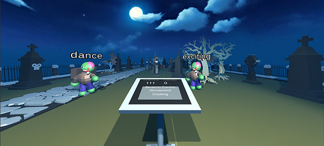

I’m a design researcher who believes through listening and learning about people, we can shape design that elevates life. My approach is grounded in anthropology alongside diverse methods from human-centered research.
FutureFinder
GENERATIVE RESEARCH | USER TESTING
Where does career planning fit in the daily lives of high schoolers?
The Talking Dead
GENERATIVE RESEARCH | USER TESTING
How do VR, livestreaming, and improv interact?
MINI Recommender Tool
USER TESTING
Testing an interactive quiz helping people find the right MINI
Rosenstrasse
PLAYTESTING | QUALITATIVE ANALYSIS
Playtesting a tabletop game about untold history and activism

Hi I'm Nathan. I research and listen to users, then I advocate on their behalf in the design process.
As I was recently indefinitely furloughed due to COVID-19, I'm currently seeking full-time researcher positions in the Bay Area (prioritizing SF and Oakland). Feel free to reach out about anything!
At my last job as a User Researcher at Scoop, I led execution of UXR on their mobile carpooling app. As a researcher, I am strongly qualitatively focused and deploy a variety of methods from my anthro and HCI backgrounds. Qualitative Data Analysis is a particular interest of mine, and I led Scoop's creation of an ongoing qualitative feedback anlaysis process. That said, I work well with quant partners and love strategizing mixed methods approaches and cross-team involvement. My past work led to strong relationships with Trust & Safety, Marketing, Community, and Support.
In my free time I enjoy tabletop gaming, drag shows, and getting better at cooking.